충남대학교 컴퓨터공학과 김상하 교수님의 "데이터 통신" 강의를 필기한 내용입니다.
다소 잘못된 내용과 구어적 표현 이 포함되어 있을 수 있습니다.
통신의 전체적인 구조
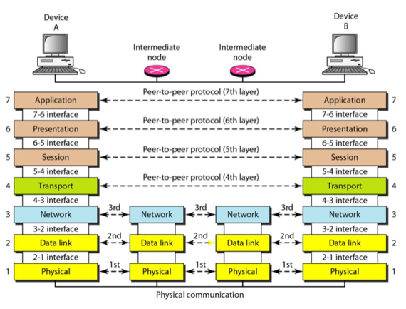
- 통신의 전체적인 구조를 OSI의 관점에서 보면 위처럼 구성이 된다
- 중간에 Intermediate Node를 다른말로 Router라고 하는데 이게 바로 station두개를 이어주기 위한 중간다리인 셈
- 그리고 Router들은 Network Layer까지만 이용한다 - 패킷을 보내는데 직접적으로 관여하는 계층은 Physical layer, Data link layer, Network layer 이 세개인 셈
- Network layer의 모듈로 IP를 사용하는 통신망을 이제 IP망이라고 하는 것
Addressing
- 택배가 제대로 전달되려면 주소가 필요하듯이 패킷이 제대로 전달되기 위해서도 주소가 필요하다
- 주소에는 Physical Address, Logical Address, Port Address, Specific Address가 있는데 specific address에서는 이번학기에서는 다루지 않는댄다
Physical Address
- Physical Address는 Link Address라고도 불리고 LAN이나 WAN로 연결된 노드의 주소를 의미한다
- 근데 보통 LAN환경, 즉, Local 한 환경에서 주로 쓰인댄다
- 이 주소는 데이터 링크 계층의 프레임에서 Hop-to-Hop Delivery를 위해 사용되는 주소라고 알고있는게 이해하기 쉽고 데이터 링크 계층의 프로토콜 중 하나인 MAC 프로토콜에서 쓰이는 MAC Address나 Ethernet 프로토콜에서 쓰이는 주소인 Ethernet Address가 포함된다
- 데이터 링크 계층이 랜카드라는 물리적인(하드웨어적인)형태로 출시가 되고 있어 Physical Address라고 이름이 붙은거지 Physical Layer에서 사용하는 주소여서 이름이 저렇게 붙은게 아니다
- 이게 뭔지 잘 이해가 안될수도 있는데 Physical Address는 랜카드마다 붙는 주소라고 생각하면 된다
Logical Address
- 일단 Logical Address라는 것은 Network Layer에서 Source-to-Delivery를 위해 사용하는 주소라고 알고있으면 된다
- IP주소가 여기에 해당되는 것
Station들의 통신 과정 이제 Address를 곁들인
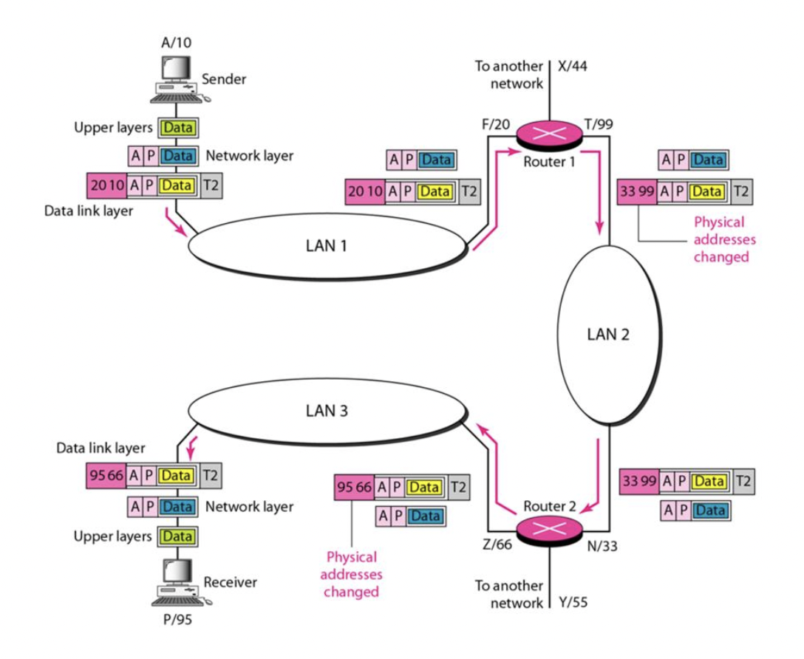
- 이 그림이 패킷이 실제로 이동하는 모습이다
- 일단 위의 예시에서 알파벳 주소는 Logical Address 이고 숫자 주소는 Physical Address 이다
- A에서 P로 보내기 위해서 일단 A는 Router 1로 보내게 된다
- Router는 중간다리 역할을 하기 때문에 많은 패킷을 수신하고 그것들을 송신하기 위해 보드가 여러개 달려 있다 - 그림에서 라우터에 붙어있는 저게 보드이고 여기를 통해 패킷들이 들어오고 나간다 - 여러개의 Logical Address, Physical Address를 갖게 되는 셈 - Router 1으로 보면 F / 20, T / 99, X / 44 이렇게 세개의 보드가 있는 셈이다
- A가 P로 보내기 위해 Router 1로 먼저 보내야 된다는 사실은 Routing Table을 통해 알아낸다 - 이건 뒤에서 설명한댄다
- 그래서 A는 Network Layer 패킷에는 송신주소 A, 수신주소 P를 데이터에 붙여 하위계층으로 내려보내고
- 하위계층인 Data Link Layer 에서는 일단 Router 1로 먼저 보내야 하므로 자기의 Physical Address인 10와 Router 1의 Physical Address인 20을 붙여 보내게 된다 - Router 1의 Physical Address를 알아내는 과정은 ARQ라는 프로토콜을 이용해 알아낸다 - 이것또한 뒤에서 설명한다
- Router 1까지 가는 과정에 많은 station이나 router를 거칠수도 있지만 다 자신한테 온 패킷이 아니기 때문에 폐기하고 Router 1에 도달해서야 자기꺼로 인식하고 받게되는 것
- Router 1에서는 Router 2로 보낸다
- Router 1에서 Network Layer까지 올라가게 되면 패킷의 헤더에 따라 이게 P한테 가야되는 놈이라는 것을 알게 된다
- 따라서 ARP를 이용해 Router 2로 가야된다는 것을 알아내고 Network Layer에서는 패킷을 그대로 하위계층으로 내려보내 데이터 링크 계층에서 Physical Address를 재구성하도록 한다
- 그림에서는 Router 1에서 T 보드를 이용해 송신을 했기 때문에 자신의 Physical Address를 99로, 받는사람 주소로 Router 2의 Physical Address인 33으로 포장해서 보내게 된다
- Router 2는 마지막으로 P로 보내게 된다
- Router 2에서도 마찬가지로 Network Layer까지 올라가서 P로 보내야 된다는 사실을 알게 되고 P는 자신의 관할 안에 있기 때문에 P로 바로 보내게 된다
- 그림에서는 Router 2에서 Z보드를 이용해 송신을 했기 때문에 자신의 Physical Address를 66로, 받는사람 주소로 P의 Physical Address인 95으로 포장해서 보내게 된다
- P는 이제 자신한테 온 패킷임을 깨닫고 Data Link Layer, Network Layer를 거처 상위 계층으로 가게 된다
- 이 과정을 잘 보면 Data Link Layer의 헤더만 바뀌고 Network Layer의 패킷은 바뀌지 않는다
- 즉, Network Layer의 패킷이 어디로 가야할지 길잡이 역할을 해주는 셈 - Router들의 Network Layer에서 이 패킷의 헤더를 보고 다음에는 어디로 가야 할 지 방향을 잡게 되는 셈
- Data Link Layer에서는 Hop-to-Hop통신만을 위한다는 것이 위의 예시에서도 확인되는 셈이다
Port Address
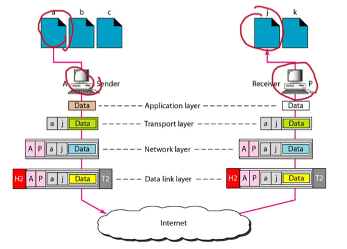
- Port Address는 Network Layer의 상위계층인 Transport Layer에서 사용하게 되는데 이 계층에서는 실제로는 컴퓨터간의 통신이 아니라 컴퓨터의 한 프로세스와 다른 컴퓨터의 한 프로세스 간의 통신이기 때문에 컴퓨터로 도착한 다음 어느 프로세스로 가야할지를 알려주는 역할을 하고
- Port Address는 컴퓨터에 도착해서 어느 프로세스로 패킷이 가야할 지를 알려주는 주소이다
Internet Routing
- Router가 하는 일을 좀 예를 들어서 설명하면
- 니가 서울대학교에 갈일이 생겼다고 해보자
- 그럼 일단 Logical Address는 충남대 → 서울대 일 것이다
- 하지만 지금은 일단 대전역으로 가야되기 때문에 대전역까지 가는 버스 노선을 정해야 하고
- 대전역까지 도착해서도 서울역까지 가는 기차를 골라서 타야되고
- 서울역에 도착해서도 서울대까지 가는 버스 노선을 타야 서울대까지 갈 수 있다
- 이렇게 각 지점들에서 최종 목적지까지 가기 위해서는 일단 내가 어디로 가야되는지 판단하는 역할을 Router와 Network Layer가 하게 되는 것이다
Router의 원리
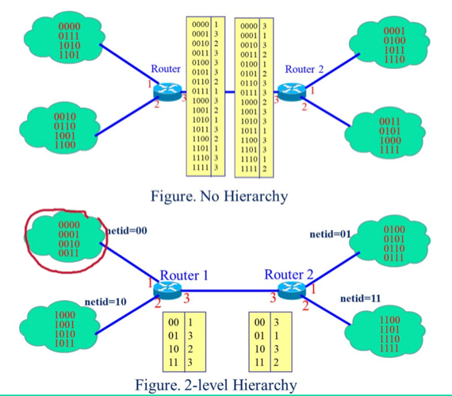
- Router에는 위 그림에서의 노란색 테이블처럼 Routing Table을 갖고 있다
- Routing Table을 한마디로 말하면 입력받은 Logical Address를 가지고 이 주소로 가려면 어느 보드로 나가야 되는지 정리돼있는 표이라고 생각하면 된다
- 따라서 어떤 Logical Address가 들어오면 해당 주소를 가지고 Routing Table에서 찾아서 어느 Router로 가야할지를 알아내게 되는 셈
- 근데 만약 Hierarchy가 없다면 Router2에 매핑되는 모든 Logical Address를 전부 저장하고 있어야 한다 - 따라서 테이블의 크기가 엄청나게 커지고 검색을 할때도 오래걸리게 된다
- 따라서 Hierarchy를 도입해서 netid라는 것을 이용하게 된다
- 이것의 작동원리를 위의 그림으로 살펴보면
- Router 1의 경우 00으로 시작하는 주소는 전부 1번 보드로, 10으로 시작하는 주소는 전부 2번 보드로 내보내고 이게 아니라면 전부 3번 보드로 내보내게 된다
- 3번 보드로 나가면 Router 2에 도달하는데 여기에서는 01으로 시작하면 전부 1번 보드로, 11로 시작하면 전부 2번 보드로 내보내게 되는 것
- 이렇게 주소값 전체에 대해 테이블을 생성하지 않고 주소의 첫 몇개의 비트들만을 이용해서 테이블을 만드는 것을 2-Level Hierarchy라고 한다
- 이 예제에서 주소의 첫 2비트가 바로 netid가 되는 것이고 이 netid만 보고 어떤 라우터로 가야할지, 어떤 보드로 나가야 할 지를 알아내는 셈이다
- 저 netid는 NIC(Network Information Center) 라는 특정 기관에서 발급해준다
- 어떤 기관이 ip주소를 사용하기 위해서는 NIC에서 netid를 할당받고 hostid부분만 그 기관 내부에서 자체적으로 할당해서 사용하게 되는 것
- 물론 한 기관에서 netid를 하나만 발급받아서 사용하지는 않는다 - 충남대의 경우에는 2~3개를 발급받아서 사용한댄다
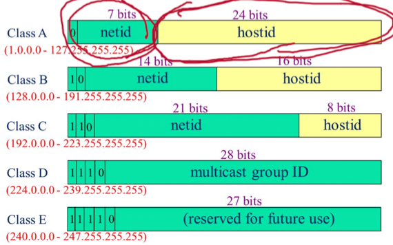
- 그래서 보면 이 Logical Address에는 다섯 레벨이 존재한다
- 하나의 라우터를 사용하는 station이 많을수록 hostid가 많아야 되므로 ClassA로 올라가고 적을수록 내려가게 된다
- 그리고 이 클래스를 구분하는것은 앞의 몇개의 비트를 사용하며 위 그림보면 0, 10, 110등이 그 비트의 값인것
- Class A 는 1.x.x.x부터 127.x.x.x까지를 의미하고 netid가 7비트 이므로 전세계에 128개의 라우터가 존재하며 한 라우터마다 1600만정도의 station이 연결되는 것이고
- Class B는 128.x.x.x부터 191.x.x.x까지이며 전세계에 16000개의 라우터, 한 라우터마다 64000개정도의 station이 연결된다
- Class C는 192.x.x.x부터 233.x.x.x까지이며 전세계에 100만개의 라우터, 하나의 라우터마다 64개의 station이 연결된다
- 비트로 표현된 주소를 십진수로 읽는 방법은 그냥 8비트씩 끊어서 읽으면 된다
- 클래스를 구분하기위해 존재하는 맨 처음의 몇비트를 제외하고 netid는 7비트, hostid는 8비트 이게 아니고
- 구분용 비트까지 합쳐서 8비트씩 끊어읽는거다
- A클래스의 경우에는 맨 처음 숫자가 00000001
01111111이므로 1127이 되는거고 - B클래스의 경우에는 맨 처음 숫자가 10000000
10111111이므로 128191까지인 것이다
Subnet
- 주소의 첫 몇비트와 테이블을 이용해 다른 라우터로 가는 라우팅도 있지만
- 이때의 라우터를 AS라고 부르고 AS들간의 통신은 주소 전체가 아닌 netid만을 이용해서 이루어진다
- 라우터에서 각 station들로 뿌려주는 라우팅도 있다
- 즉, 라우터에서 하나의 보드로 나왔을 때 다른 라우터로 가는게 아니라 station들로 가는 경우
- 라우터에서 station들로 뿌려줄때는 하나의 회선에 모든 station을 전부 연결해줄수도 있지만
- 회선을 여러개로 나누고 그 회선에 여러 station을 연결하는 방법을 주로 사용하는데 이것을 Subnet이라고 한다.
- 이렇게 함으로써 좋은점은 봐봐라
- 만약에 Class C여서 station을 256개를 연결할 수 있다고 해보자
- 이때 한 라우터의 한 보드를 4개의 부서가 사용하고 각 부서마다 64개의 station들을 연결한다고 하면
- 하나의 회선에 256개의 station을 모두 연결해 4개의 부서가 나눠가질 수도 있지만
- 하나의 부서마다 한 회선을 받아 여기에 각각 64개의 station을 연결하는식으로 hostid들을 마구잡이로 나눠갖는게 아닌 정리해서 나눠가질 수 있게 된다
- 그럼 이제 회선을 나눴으니 하나의 주소가 들어왔을 때 이것을 어느 회선으로 보내야 되는지 결정해야 되는 문제가 생기게 되는데 이때 사용되는 개념이 Subnet Mask이다
- 얘는 예시로 이해하는게 좋다 - 아주 중요한 내용이고 시험에 무조건 나오니까 반복숙달해라
Subnet Example 1
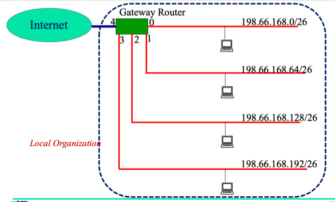
- 일단 이렇게 만들고싶은거다 - 하나의 보드로 나와서 거기서 Router를 거쳐 4갈래로 나누는 것(이때의 라우터는 AS와는 다른 subnet을 위한 라우터이다)
- 일단 이 예제에서는 C클래스를 사용하는데 198.66.168 로 netid가 설정되어 있다
- 그리고 여기에 198.66.168.65 라는 주소가 들어왔을때 어떻게 처리하는지 보면
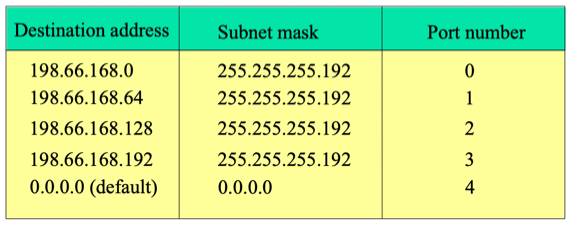
- 이게 바로 출력 포트를 결정하는 테이블이다 - 주소가 하나 들어오면 이 테이블의 첫번째부터 mask를 AND연산하고 연산결과가 Dst. Addr이랑 같은지 확인한다.
- 처리하는 과정을 좀 더 자세히 보면 일단 들어온 주소에다 첫번째 subnet mask를 AND연산한다.
- 보면 255라는 숫자가 많이 나오는데8비트에 전부 1이 들어있으면 255라는 숫자가 나오게 된다
- 따라서 어떤 숫자에 255를 AND하면 255의 비트가 전부 1이므로 입력된 숫자가 그대로 나오게 되는것
- 위의 예제에서 들어온 주소가 198.66.169.65이므로 여기에 255.255.255.192를 AND하면 255는 그대로 나온다고 했으므로 198.66.169까지는 그대로 나오고 192랑 65을 AND하면
[11000000 & 01000001]이므로[01000000]인 64가 나오게 된다 - 근데 이 값은 dstAddr인 198.66.168.0이랑 다르므로 두번째로 넘어간다
- 첫번째 subnet mask랑 AND한 결과가 dst랑 같지 않다면 그의 결과가 같을때까지 아래로 내려간다
- 두번째의 경우에도 subnet mask가 동일하므로 그 결과는 198.66.168.64인데 이건 dst와 동일하므로 여기에 매칭이 된다
- 매칭이 되면 해당하는 Port number로 빠져나가게 된다
- 그리고 아무데도 매칭되지 않으면 이 보드에 해당하는 주소가 아니기 때문에 다시 뒤로 되돌려 보낸다
- 아무데도 매칭되지 않은 애들을 subnet mask를 0.0.0.0로 주고 dst도 0.0.0.0으로 주어서 캐치한다 - subnet mask가 0.0.0.0이면 어떤값이 와도 그 결과가 0.0.0.0이기 때문 - 이럴때를 default라고 하더라
Subnet Example 2
- 이 예제에서는 클래스B의 168.188을 netid로 사용 하고
- 168.188.129.51 이 들어오게 된다
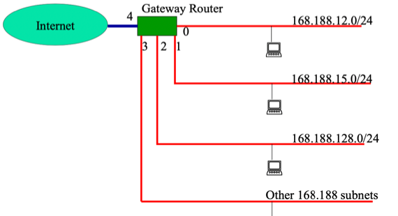
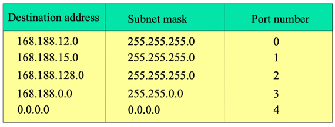
- 저 /숫자에 대해 알아보면
- /숫자를 통해 subnet mask를 간단하게 표현할 수 있다
- 뭔말인가 하면 전체 32비트중에 “숫자”만큼 앞에가 1로 채워지고 나머지는 0이 채워지는 숫자를 subnet mask로 사용하겠다는 소리이다
- 위의 예제에서는 /24 이므로
[11111111 - 11111111 - 11111111 - 00000000]가 되므로168.188.12.0의 subnet mask는 255.255.255.0인 것
- 그리고 /숫자를 이렇게 활용할 수도 있다
- 전체가 32비트이고 그중에 앞의 “숫자”개가 1로 채워져있기 때문에 0으로 채워진 “32 - 숫자”비트에는 뭐가 오든 AND의 결과가 dst랑 같다면 매칭된다 - 이 “32 - 숫자”비트로 만들수 있는 경우의 수를 전부 따져보면 2^(32 - 숫자) 이기 때문에 이만큼의 station이 하나의 회선에 연결된다고 해석할 수도 있다
- 위의 예제에서는 /24이기 때문에 2^8 해서 256개의 station이 한 포트의 회선에 연결되는 것이다
- 따라서 위의 그림에서는 168.188이지만 0, 1, 2에서 매치되지 않은 애들을 3번 포트로 내보내게 되는데 이때의 subnet mask는 255.255.0.0이므로 168.188.0.0/16으로도 표현할 수 있는 것
Subnet Example 3
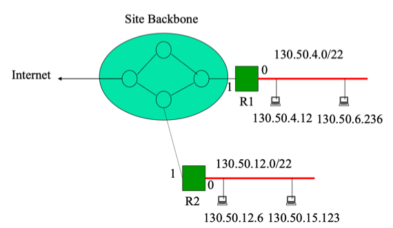
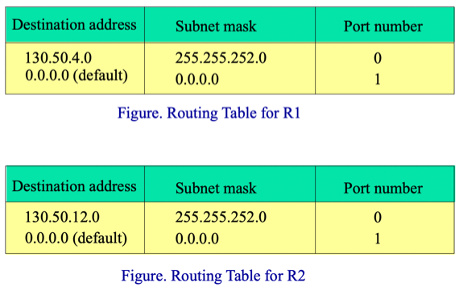
- 이 예시처럼 게이트웨이 라우터를 여러개 사용할 수도 있다
- R1에서 130.50.4.0/22에 매치된다면 0번 포트로 나가게 되지만
- 만약 매치되지 않는다면 다시 1번으로 나가 그 아래 R2에 걸려 130.50.12.0/22로 매치를 시도하게 되는 구조이다